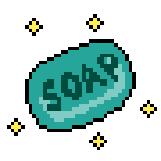

When my husband and I were playing with the keyboard piano's sound effects, we came up with the idea to make a game about my brother, Ayden, fighting against COVID-19. It is meant to be a light-hearted game- not to minimize the serious effects this pandemic has had on people. This game shows Ayden as the main character, who has to get to Mom's family party even though "COVID-19 is happening outside". He wears a mask and shoots fireballs (because of his naturally red hair) at people that have Covid. Again, this was just meant to be fun and silly! Not meant to offend or downplay anyone's trials. When you get to the end, it turns out it may not have been the best idea to go to Mom's party after all...
All art and coding of the game was done myself, though while following online YouTube tutorials for many of the main functions of the game and to learn some basic animation principles. Some YouTube links are posted at the end of this page for anyone interested in the videos I used. All code WILL BE on my Github. Aseprite was used for the pixel art and animation and Godot was used for the actual setting up and programming of the game.
Here is an example of a spritesheet made for the following animation:

For anyone unfamiliar, a spritesheet has all the animations required for the character in it. So the first 18 frames are for walking right, the next 18 are for walking left, and the next 4 are for the animation before the character disappears from the screen. There are 5 different variations of the infected characters, so that means that a total of 200 frames were created for all of them.
Demo Video of Ayden Simulator (1st ending)More 2D Pixel Art Animations: Power-ups:


Ending scene (1st ending):

Infected people:


Misc: